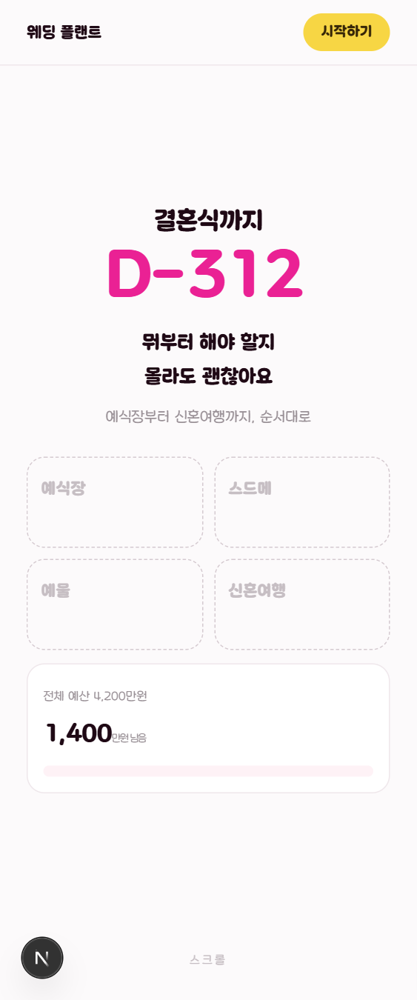
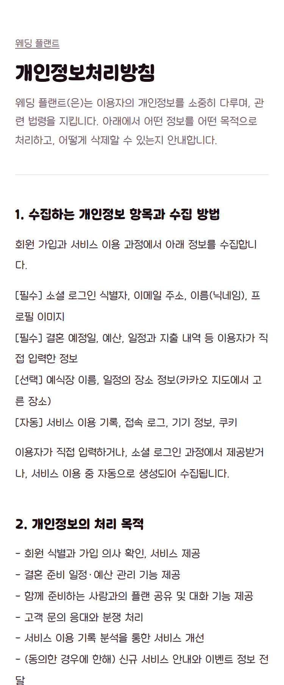

C안 · 12
손대지 않는 두 화면
나머지 열두 화면과 달리 이 둘은 C안을 적용하지 않습니다. 빠뜨린 게 아니라, 각각 손대면 안 되는 이유가 따로 있습니다. 그 이유를 여기 적어 둡니다 — 나중에 "왜 이 두 개만 옛날 그대로지?" 라는 질문이 반드시 나옵니다.

랜딩 — 시안이 원본이고 CSS 는 생성물입니다
app/landing.css 는 손으로 고치는 파일이 아닙니다.
node scripts/gen-landing-css.cjs 가
docs/concepts/landing-1a-final.html 의 <style> 을
PostCSS 로 파싱해 선택자마다 #lp 를 붙여 만듭니다.
직접 고치면 다음 생성 때 통째로 사라집니다 — 예산 막대 순서와
D-day 숫자 굵기를 그렇게 고쳤다가 두 번 다 되살아났습니다.
게다가 이 화면은 로그인 전 화면입니다. 앱 셸을 쓰지 않고, 하단 탭바도 없고, 다섯 장면이 전부 CSS scroll-driven animation 으로 짜여 있습니다. C안의 머리 면을 붙일 자리 자체가 없습니다.
landing-1a-final.html)을 고치고
생성 스크립트를 다시 돌립니다. 그리고
node scripts/landing-widths.cjs 로 15개 뷰포트를 확인합니다.
헤드리스 크롬은 prefers-reduced-motion 이 기본
reduce 라, 그대로 검사하면 감속 폴백만 보게 됩니다.

방침 — 자바스크립트 없이 전문이 보여야 합니다
서버 컴포넌트로 두어 JS 없이도 전문이 렌더됩니다. 스토어 심사자와 크롤러가 그렇게 접근하고, 구글 플레이는 스토어 등록 양식에서 이 공개 URL 을 요구합니다. 머리 면·탭바 같은 클라이언트 장식을 붙이면 그 성질이 깨집니다.
읽으러 들어오는 문서이기도 합니다. 앱을 안 쓰는 사람도 보는 화면이라 내비게이션이 방해가 됩니다. 지금의 검은 글씨 · 흰 바탕 · 긴 본문이 이 화면에 맞는 모양입니다.
lib/legal.ts 한 곳만 고칩니다.
동의서 4종과 방침 본문이 전부 거기 있습니다 — 예전에는 같은 문구가
두 군데 복사돼 있었고, 한쪽만 고치면 사용자가 동의한 문서와
화면에 보이는 문서가 달라집니다. 위탁 표(5번)와
계정 삭제 방법(6번)은 비우지 마세요.
그래도 이어지는 것
두 화면 모두 글꼴은 이미 같습니다 — 앱 전체가 둥근미소를 쓰고,
랜딩은 next/font 가 붙여 둔 --font-dunggeunmiso
를 그대로 참조합니다. C안이 글꼴을 바꾸지 않으므로 이 둘도 함께
어긋나지 않습니다.
브랜드 색도 같습니다
랜딩의 강조색과 C안의 면 색은 같은 #ee2b8c 입니다.
랜딩에서 앱으로 들어올 때 색이 바뀌지 않습니다 — 오히려 지금보다
더 이어집니다(지금 앱은 분홍이 카드로만 나타나 랜딩과 결이 다릅니다).
랜딩 CSS 를 만질 일이 생기면
모바일 리셋 선택자 목록 가운데에 다른 규칙을 끼워 넣지 마세요.
목록이 두 동강 나면서 제목·리드문이 통째로 투명해집니다 — 실제로 그래서
한 화면이 백지였습니다. 시안 파일은 .prettierignore 에
있습니다.